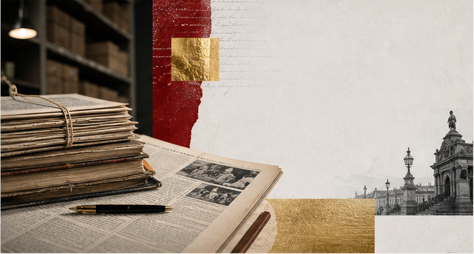

2020
- Csákányi Eszter
- Kardos Ernő

Szabad Sajtó-díj
Elismerés a szabad, hiteles és felelős nyilvánosságért.
A Szabad Sajtó-díj több mint 30 éves múltra visszatekintő elismerés. A díj azoknak szól, akik munkájukkal hozzájárultak a magyar nyilvánosság szabadságához, minőségéhez és sokszínűségéhez.

A díj története
A Szabad Sajtó-díj 1994-től 2020-ig minden évben olyan újságírókat, szerkesztőségeket, írókat, műsorkészítőket, közéleti alkotókat és médiaműhelyeket ismert el, akik hozzájárultak a független magyar tájékozódás, a társadalmi egyenlőség és a demokratikus információszabadság ügyéhez.
A díj története során mindez nem mindig ugyanazt a kockázatot jelentette. Viták és éles közéleti szembenállások mindig léteztek, de az elmúlt másfél évtizedben a szabad nyilvánosság működtetése sokak számára egyre jelentősebb szakmai, intézményi és egzisztenciális kockázattal járt. Ez az Alapítvány működésére is hatott: 2020 és 2026 között a Szabad Sajtó Alapítvány tevékenysége lényegében szünetelt.
A Szabad Sajtó-díj birtokosainak névsora így is átfogó képet ad a harmadik magyar köztársaság médiavilágának sokszínűségéről, a magyar sajtó, a határon túli magyar nyilvánosság, a kulturális közélet és a demokratikus közbeszéd fontos áramlatairól.
Ezért a díj és a díjazottak történetét a következő hónapokban átlátható, rendezett, kereshető és nyilvános formában dolgozzuk fel. Ez nem csupán archívumépítés: a díjazottak munkája a szabad nyilvánosság történetének része, és egy új, szabad magyar nyilvánosság megszervezéséhez is fontos tanulságokkal szolgálhat.
2026 után
A médiakörnyezet rendkívül gyorsan változik. A korábbi kapuőrök szerepe meggyengült, a nyilvánosság sok ezer csatornára esett szét, miközben ismeretlen algoritmusok, globális platformok és sokszor nem átlátható megrendelői érdekek határozzák meg a napi működést.
Egyszerre nagyobb és kisebb a szabadság: bárki elindíthat saját felületet, de soha nem volt ekkora a zaj, miközben a nyilvánosságot meghatározó algoritmusok működése lényegében átláthatatlan. A professzionális sajtó és médiumok mellett ma már az online tartalomgyártók, podcastek, videós műsorok, közösségi médiában működő alkotók és független digitális csatornák is meghatározó szerepet játszanak a nyilvánosság alakításában.
Ezért a Szabad Sajtó-díj megújításán dolgozunk. Célunk, hogy a díj egyszerre őrizze meg hagyományát és nyisson a kortárs nyilvánosság új formái felé. Kiemelt figyelmet szeretnénk fordítani a fővároson kívüli médiumokra, a nehezebb körülmények között dolgozó szerkesztőségekre, valamint azokra az online alkotókra és műhelyekre, amelyek felelős, közérdekű és demokratikus tartalmakat hoznak létre.
Díjazottak
Az alábbi lista a Szabad Sajtó Alapítvány díjazottjait tartalmazza 1994 és 2020 között. A névsor rendezését és a díjazottak történetének feldolgozását folyamatosan végezzük; célunk, hogy az archívum a következő hónapokban egyre teljesebb, kereshetőbb és részletesebb formában legyen elérhető.
Nincs találat a megadott szűrésre.